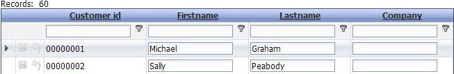
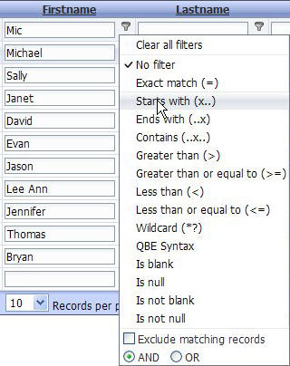
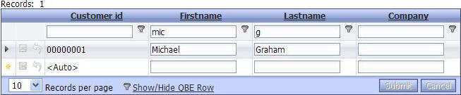

Query by Example
Property name: Query-by-Example row' ('Properties' pane)
Previously, the only way to find specific records was to use a search section or 'quick search'.
Now there is a new method to search individual columns using a sophisticated 'query by example' process. A link is shown at the bottom of the grid to show or hide a query row. The initial display of the row can be shown or hidden. Clicking the link either shows or hides the Query-by-Example row. It has a textbox for each row to allow the user to enter some search text. The user then clicks on the icon to the right of the textbox and a list of possible search criteria opens. The user can clear all filters on all columns, remove the filter on the current column with 'No filter'., or select specific criteria for the current row. The query runs as soon as the criteria is clicked. Additional queries can be run on other rows to further filter the data.
|
Link to Show / Hide Query by example |
|  |
|
Grid showing Query By Example row |
|  |
|
Query by example search criteria |
|  |
|
Grid filtered on 2 columns queried with 'Starts with..' |
You can customize the label for the 'Show/hide Query-by-Example' row hyperlink that is shown if Query by Example is turned on.